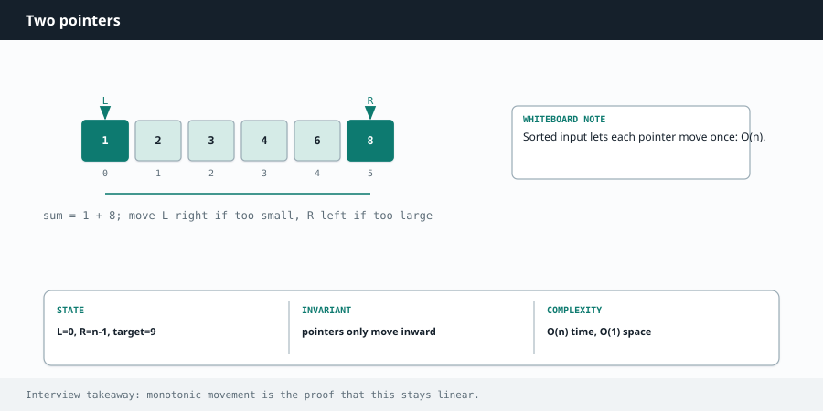

Competitive Programming
Chapter 04
Two pointers

Instead of one index walking through an array, you use two, and you move them cleverly based on what you find. This turns many O(n²) brute forces into O(n), and it barely uses extra memory.
The two flavors
Opposite ends. One pointer starts at the left, one at the right, and they move toward each other.
This is the go-to for sorted arrays and for anything symmetric like checking a palindrome.
Same direction (fast and slow). Both start at the left. One moves ahead to explore, the other lags behind to mark a boundary. This is how you remove duplicates in place or detect a cycle in a linked list. left right 1 3 4 5 7 9 11 → ← sum too small? move left up. sum too big? move right down.
On a sorted array, comparing the current sum to the target tells you exactly which pointer to move.
R E A C H F O R T W O P O I N T E R S W H E N Y O U S E E
A sorted array plus "find a pair that sums to X". A palindrome check. "Remove duplicates in place." "Container with most water." "Move zeros to the end." Anything where you can make a decision by comparing the two ends, or where one runner explores while another marks position.
Worked example: two sum on a sorted array
Because the array is sorted, you do not need a hash map at all. Point at both ends. If the current sum is too small, the only way to grow it is to move the left pointer right (to a bigger number). If it is too big, move the right pointer left (to a smaller number). You can never miss the answer.
def two_sum_sorted(nums, target):
left, right = 0, len(nums) - 1
while left < right:
total = nums[left] + nums[right]
if total == target:
return [left, right]
elif total < target:
left += 1 # need a bigger sum
else:
right -= 1 # need a smaller sum
return []
int[] twoSumSorted(int[] nums, int target) {
int left = 0, right = nums.length - 1;
while (left < right) {
int total = nums[left] + nums[right];
if (total == target) return new int[]{left, right};
else if (total < target) left++; // need a bigger sum
else right--; // need a smaller sum
}
return new int[]{};
}
This is O(n) time and O(1) space. No extra map, just two indices.
Worked example: valid palindrome
Check whether a string reads the same forwards and backwards, ignoring case and non-letters.
Point at both ends, skip anything that is not a letter or digit, and compare. Walk inward until the pointers meet.
def is_palindrome(s):
left, right = 0, len(s) - 1
while left < right:
while left < right and not s[left].isalnum():
left += 1
while left < right and not s[right].isalnum():
right -= 1
if s[left].lower() != s[right].lower():
return False
left += 1
right -= 1
return True
boolean isPalindrome(String s) {
int left = 0, right = s.length() - 1;
while (left < right) {
while (left < right && !Character.isLetterOrDigit(s.charAt(left)))
left++;
while (left < right && !Character.isLetterOrDigit(s.charAt(right)))
right--;
if (Character.toLowerCase(s.charAt(left)) !=
Character.toLowerCase(s.charAt(right))) return false;
left++;
right--;
}
return true;
}
The same-direction variant: remove duplicates in place
Given a sorted array, keep only one of each value, without allocating a new array. A slow pointer marks where the next unique value should go. A fast pointer scans ahead. Whenever fast finds something new, write it to the slow position and step slow forward.
def remove_duplicates(nums):
if not nums:
return 0
slow = 0 # last position of a kept value
for fast in range(1, len(nums)):
if nums[fast] != nums[slow]:
slow += 1
nums[slow] = nums[fast]
return slow + 1 # length of the unique part
int removeDuplicates(int[] nums) {
if (nums.length == 0) return 0;
int slow = 0; // last kept position
for (int fast = 1; fast < nums.length; fast++) {
if (nums[fast] != nums[slow]) {
slow++;
nums[slow] = nums[fast];
}
}
return slow + 1; // length of unique part
}
W A T C H O U T
Opposite-ends two pointers usually requires the array to be sorted first. If it is not sorted and the problem does not let you sort, a hash map is often the better tool. Also be careful with the loop condition: while left < right stops the pointers from crossing, which is almost always what you want.
Deeper Intuition
Why moving the shorter side is safe
On a sorted array, the two ends carry information: if their sum is too big the answer must be smaller, so you can only help by pulling the right pointer in, and if it is too small you pull the left in. Each move permanently discards a whole set of pairs you never have to check again, which is why the work drops from O(n squared) to O(n). In the water container below, the height is limited by the shorter wall, so widening toward the taller wall can only lose area, and moving the shorter wall is the only move that can improve things. area = width * shorter wall = 7 * 7 = 49 1 8 6 2 5 4 8 3 7 L R Water is capped by the shorter wall, so moving the taller wall never helps.
Move the shorter one inward.
Another worked example: Container With Most Water
Two walls hold water up to the height of the shorter one, times the distance between them. Start wide at both ends and always move the shorter wall inward, tracking the best area seen. Moving the shorter wall is the only choice that can ever increase the area.
def max_area(height):
left, right = 0, len(height) - 1
best = 0
while left < right:
width = right - left
best = max(best, width * min(height[left], height[right]))
if height[left] < height[right]: # move the shorter wall in
left += 1
else:
right -= 1
return best
int maxArea(int[] height) {
int left = 0, right = height.length - 1, best = 0;
while (left < right) {
int width = right - left;
best = Math.max(best, width * Math.min(height[left], height[right]));
if (height[left] < height[right]) left++; // move shorter wall
else right--;
}
return best;
}
Going Deeper
What kinds of problems this solves
U S E T H I S P A T T E R N F O R
Problems on a sorted array or a string where two positions can move toward each other or in the same direction, so you replace a nested loop with a single sweep. Think pairing, partitioning in place, palindrome checks, and merging.
| Problem type | Classic examples |
|---|---|
| Ends moving inward | Two Sum II, 3Sum, 4Sum, Container With Most Water, Trapping Rain Water, Valid Palindrome |
| Same direction, slow and fast | Remove Duplicates from Sorted Array, Move Zeroes, Remove Element, Sort Colors |
| Merging two sequences | Merge Sorted Array, Squares of a Sorted Array, Backspace String Compare |
The algorithm, in a bit more detail
When the array is sorted, the two ends carry information. If the sum of the two ends is too big, the only way to get smaller is to pull the right pointer left. If it is too small, push the left pointer right.
Each step throws away a whole set of pairs you no longer need to check, which is why the work drops from O(n squared) to O(n).
The same direction version uses a slow pointer that marks where the next good element goes and a fast pointer that scans ahead. This is how you compact an array in place, moving the elements you want to keep to the front without extra memory.
Variations you will run into
Common flavors are opposite ends for pair and area problems, slow and fast in one direction for in place filtering, and three pointers for 3Sum, where you fix one element and two pointer the rest.
The Dutch national flag idea (Sort Colors) uses three pointers to partition into low, middle, and high in one pass.
Edge cases and gotchas
The opposite ends trick needs a sorted array, so sort first if the input is not sorted and the problem allows it.
In 3Sum and 4Sum, skip duplicate values on both pointers or you will emit the same triple many times.
Watch the loop condition, usually left is strictly less than right, so you do not compare an element with itself.
For in place removal, return the new length and remember the array tail past that length is garbage.
S T E P B Y S T E P
Two pointers on the sorted array [1, 3, 4, 6, 8, 10] with target = 10. The ends move inward based on whether the sum is too big or too small.
| left | right | sum | compare to 10 | action |
|---|---|---|---|---|
| 0 | 5 | 1 + 10 = 11 | too big | move right in |
| 0 | 4 | 1 + 8 = 9 | too small | move left in |
| 1 | 4 | 3 + 8 = 11 | too big | move right in |
| 1 | 3 | 3 + 6 = 9 | too small | move left in |
| 2 | 3 | 4 + 6 = 10 | equal | found, return [2, 3] |
Interview drill — Two pointers
Sorted arrays and container geometry — state the move rule.
More drills in the Interview Lab.
Q1. 3Sum
Unique triplets summing to 0.
Sort; fix i; two-pointer on rest; skip duplicates for i/lo/hi.
Q2. Container With Most Water
Max area between two lines.
Start at ends; move the shorter line inward — only that can improve area.
Q3. Trapping Rain Water
Q4. Valid Palindrome
Palindrome ignoring non-alphanumeric?
lo/hi; skip non-alnum; compare lowercased.
Q5. Remove Duplicates from Sorted Array
In-place unique prefix length.
Slow writes uniques; fast scans.